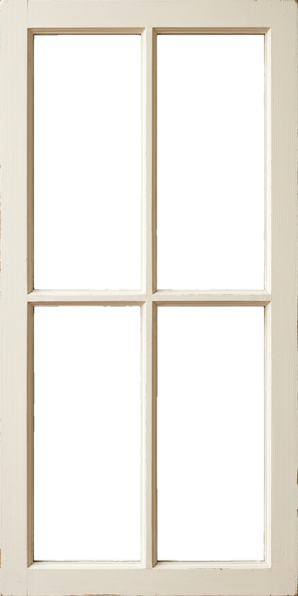
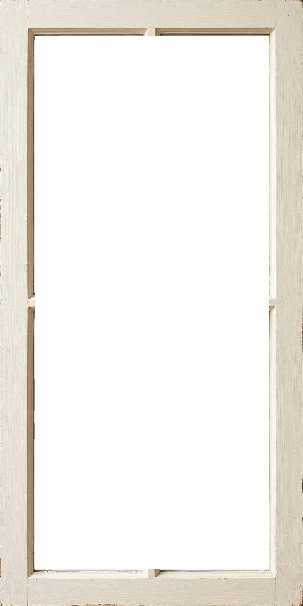

window needs the camera to open.
allow camera access, then try again.


window needs the camera to open.
allow camera access, then try again.


look outside.
tap to open
tap and say “i'm going out”
a scene guards your apps until you end it.
your photos stay locked until then.
for the night
how long
window opens once you've been in an app this long
minutes
the everyday mode. it stays on, quietly, and only steps in once you've actually fallen in.
voice —
the prototype uses the browser's recogniser. the real app does this on-device.
continue to
panes
archive
window · —
everything stays on this device